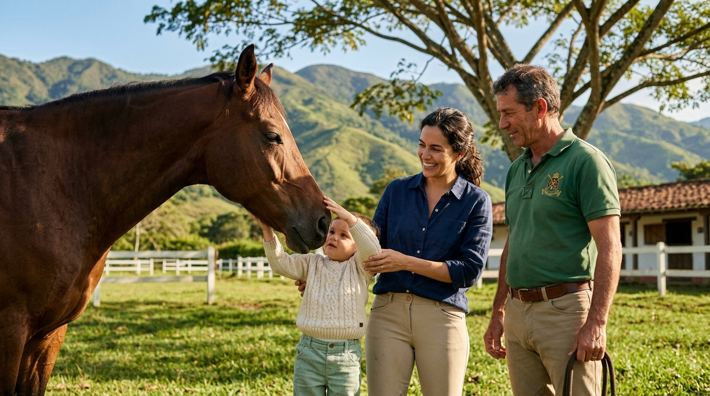
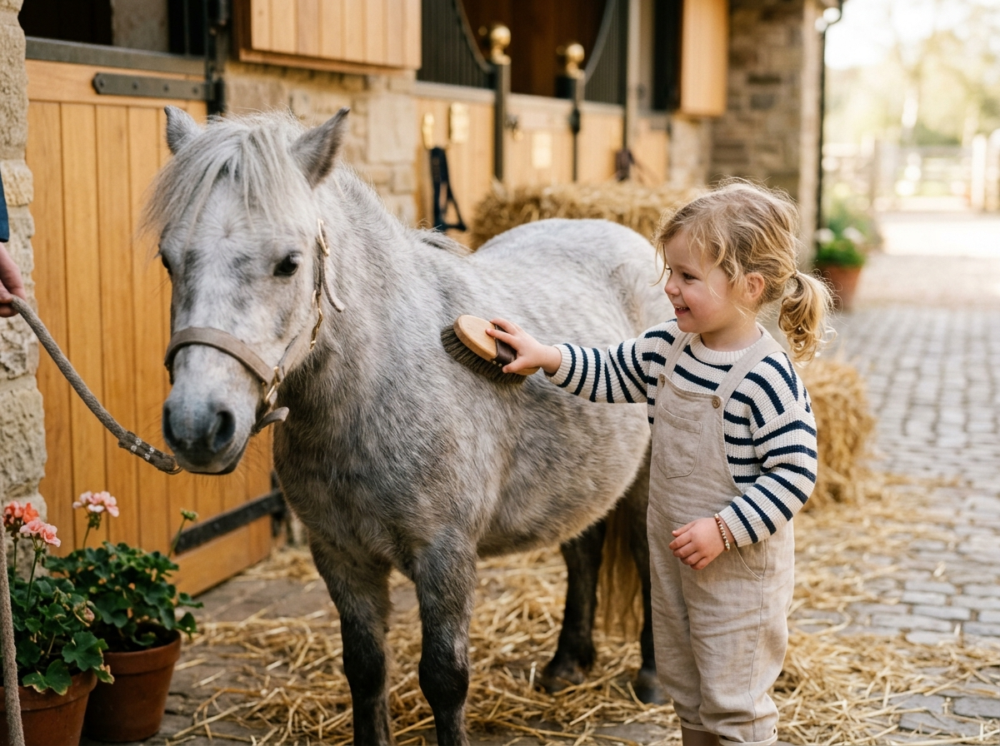

Primeros aprendizajes, grandes experiencias
Estimulación Temprana
con Caballos
En el Club Ecuestre La Chucua J.C. creemos que los primeros años de vida son una etapa fundamental para descubrir el mundo, desarrollar habilidades y construir vínculos.

“Aprender a tocar un caballo con suavidad, esperar su turno, observar sus reacciones, cuidarlo y confiar en él también se convierte en una oportunidad para aprender sobre empatía, paciencia, responsabilidad y comunicación.”
Club Ecuestre La Chucua J.C. · Educación que Deja Huella
Nuestro Enfoque de Estimulación
Cada niño tiene su propio ritmo. Por eso no buscamos comparar ni exigir resultados iguales. Buscamos crear un ambiente donde pueda explorar, descubrir, jugar, relacionarse y aprender.
Sin Comparaciones ni Presiones
Respetamos las etapas individuales de maduración física y emocional. Jamás forzamos una interacción; invitamos a la curiosidad mediante el juego libre guiado.
El Caballo Como Compañero
Nuestros caballos y animales de la mini granja son tratados con infinito bienestar y calma, transmitiendo al niño serenidad, calidez y un estímulo sensorial inigualable.
Vínculo con la Familia
Los padres o cuidadores acompañan activamente las sesiones cuando sea necesario, fortaleciendo el apego seguro y compartiendo momentos memorables e irrepetibles.
¿Qué Actividades Realizamos?
Dependiendo de la edad y del proceso de cada niño, articulamos 10 experiencias diseñadas para estimular armónicamente todos sus sentidos.
1. Acercamiento y Contacto Respetuoso
Caricias suaves en el pelaje, sentir el calor corporal y el aliento tranquilo del caballo en calma.
2. Exploración Sensorial y Texturas
Descubrimiento de texturas naturales: crin suave, heno fresco, tierra húmeda, sonido de relinchos y viento de sabana.
3. Coordinación y Equilibrio
Ejercicios posturales sobre superficies variadas y estímulo del sistema vestibular con apoyo seguro.
4. Ejercicios de Movimiento y Motricidad
Circuitos lúdicos sobre césped, gateo, alcance de objetos y desplazamientos al ritmo natural del entorno.
5. Reconocimiento e Instrucciones Sencillas
Juegos de imitación, señalar partes del caballo y comprender indicaciones afectivas cortas.

El infante aprende la paciencia y el cariño a través de pequeñas caricias con cepillos de cerdas ultra suaves.
6. Actividades de Observación y Atención
Fomentar la calma visual, la contemplación del pastoreo y la focalización de la mirada sin sobreestímulos digitales.
7. Cepillado y Cuidado Acompañado
Práctica de motricidad fina y agarre mientras peinan suavemente las crines junto a su facilitador y padres.
8. Interacción con la Mini Granja
Encuentros cercanos con conejitos, cabritas enanas y aves nobles para diversificar el repertorio afectivo.
9. Juegos al Aire Libre y Naturaleza
Caminatas sobre praderas verdes, respiración profunda de eucalipto y conexión con la biodiversidad viva.
10. Vínculo, Confianza y Comunicación
Desarrollo de seguridad emocional: el niño comprueba que es un entorno amable donde se siente protegido.
Adaptación Progresiva por Edades
Las actividades se adaptan progresivamente a la etapa de desarrollo y características únicas de cada niño:
Descubrimiento Suave & Conexión en Brazos
En esta primera etapa, el bebé asiste en brazos de mamá, papá o cuidador. Se realizan experiencias de estimulación visual y táctil: sentir la suavidad del pelaje, escuchar el resoplido tranquilo del caballo y observar animales pequeños en la mini granja. Sesiones dosificadas para no saturar sus sentidos.
Objetivo Principal
Generar familiaridad y placer sensorial sin miedo, reforzando la seguridad afectiva entre los padres y el bebé.
⏱️ Duración de Sesiones
Sesiones de 1 HORA. En niños más pequeños podremos realizar sesiones más cortas, aumentando progresivamente el tiempo de acuerdo con su respuesta y bienestar integral.
👨👩👧 Modalidad de Atención
Las actividades pueden realizarse de manera individual o en grupos pequeños, buscando ofrecer una atención cercana, cálida y personalizada con padres presentes.
Aviso de Responsabilidad
“Las actividades de estimulación temprana no sustituyen procesos médicos, terapéuticos o educativos especializados cuando estos sean necesarios.”
Plan Mensual de Estimulación
Formación continua con acompañamiento profesional, instalaciones campestres de élite y animales nobles garantizados.
4 sesiones al mes (1 clase semanal de 1 hora) · Atención personalizada
Cupos limitados para preservar la atención personalizada.
¿Qué Incluye el Plan Mensual?
- check_circle 4 sesiones de 1 hora al mes programadas en día y horario fijo acordado.
- check_circle Caballo o pony noble asignado, entrenado específicamente para contacto infantil seguro.
- check_circle Acceso libre a la mini granja (conejos, cabritas, aves nobles) durante la sesión.
- check_circle Padres y cuidadores participan activamente sin costo adicional alguno.
- check_circle Pistas y zonas cubiertas garantizadas en caso de lluvia o sol intenso.
- check_circle Ambiente campestre exclusivo, seguro, con parqueadero privado y cafetería campestre.
Preguntas Frecuentes
Todo lo que las familias desean saber antes de su primera visita.
Regálale a tu Hijo una Experiencia que
Dejará Huella en su Corazón
Coordina una sesión de valoración y conoce a nuestros caballos y equipo en las instalaciones del Club Ecuestre La Chucua J.C.